Quatre chantiers : un logo et une vignette pour PacQC, un personnage pixel pour la Scène, une vraie carte pour Atlas, et le retour du portrait. Les images de jeu sont dessinées pixel par pixel, chacune sur une grille constante (aucun pixel étiré, aucune police chargée), par le script _refonte/outils/visuels-phase7.mjs.
Un personnage jaune original, le nom exact « PacQC », l'arcade sans surcharge ; aucun visage, aucun logo Teams, aucun symbole officiel.
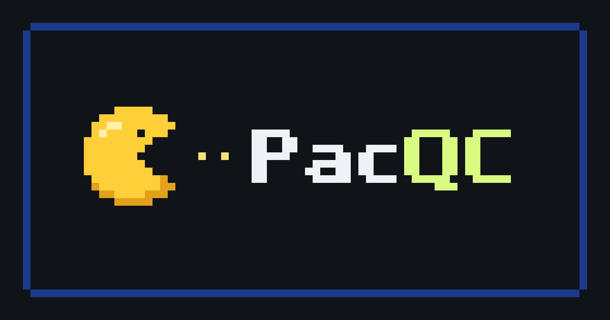
Proposition 1 · recommandée pour la grille
Borne
Le personnage avale une ligne de pastilles jusqu'au nom. Lettres pixel dessinées pour ce logo, « QC » au vert anis du jeu, un seul filet de borne.
Pourquoi : le nom est le plus lisible des trois en vignette mobile (on le lit à 360 pixels de large), et le fond nuit reste celui du jeu.
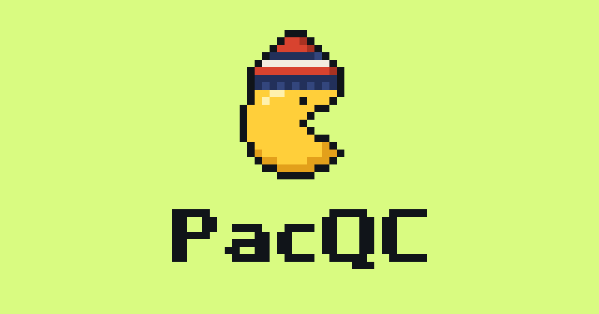
Proposition 2 · mascotte
Tuque
Le personnage coiffé d'une tuque rayée : un clin d'œil québécois sans aucun symbole officiel. Contour d'un pixel pour tenir sur fond clair.
Usage conseillé : icône d'onglet, écran de victoire, page du jeu. Plus ludique, moins sobre dans un portfolio.
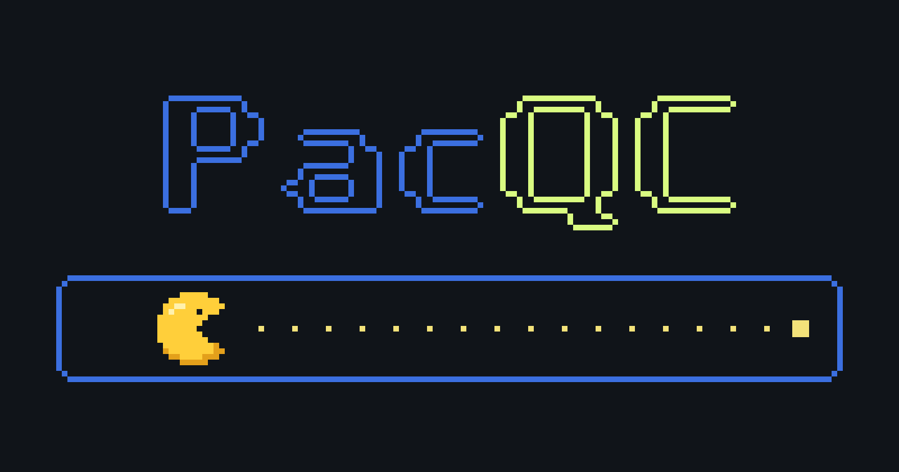
Proposition 3 · affiche
Labyrinthe
Le nom devient le labyrinthe : chaque lettre est un bloc de murs. Le personnage file dans le couloir du dessous.
Limite : les murs fins perdent de la netteté en petit. Mieux en grand, en tête de la page du jeu.
Logo 1, horizontal (SVG, pixels exacts).
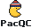
Logo 2, empilé (SVG) : se réduit en icône.Logo 2 à 64 pixels : le nom reste lisible.
Recommandation : la Borne pour la grille et l'en-tête du jeu ; la Tuque comme mascotte et icône. Les deux partagent le même personnage et les mêmes lettres : une seule identité, deux formats.
Le personnage est redessiné (œil, ombré en deux tons, proportions propres) ; aucun sprite ni logo existant n'est repris. Sa silhouette (un disque à bouche ouverte) évoque toutefois un personnage d'arcade déposé : acceptable pour un jeu personnel non commercial, à garder en tête.
Scène Pixel Art
Un petit personnage dessiné d'après le portrait professionnel ; trois compositions.
Traits repris du portrait : cheveux châtain foncé coiffés en volume, lunettes rondes à monture sombre, moustache et barbiche auburn, costume marine, chemise bleu clair sans cravate.
Proportions « chibi » (tête d'environ la moitié de la hauteur) : le visage reste lisible à la taille native de 32 pixels.
Contour sélectif : chaque matière est cernée par sa propre teinte sombre (peau, cheveux, costume), pas par un noir uniforme.
Il remplace l'avatar de la phase 6, dont les lunettes formaient un bandeau et la barbe couvrait les joues.
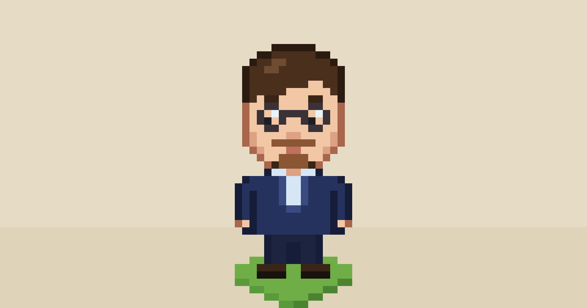
Composition 1
Le personnage
L'avatar seul, en grand, sur son carreau. Le plus lisible, mais il ne dit rien du projet.
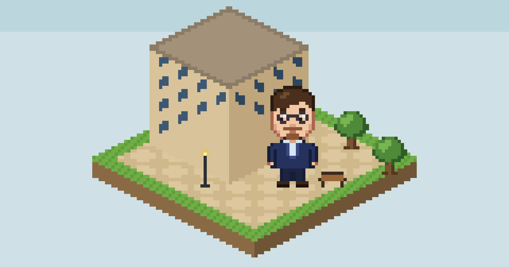
Composition 2 · recommandée pour la grille
La place
Une petite place isométrique (pavillon, arbres, banc, lampadaire) dans l'esprit de la scène du jeu, et l'avatar qui s'y promène.
Pourquoi : elle montre à la fois le projet et la personne, et tout est au même pas de pixel.
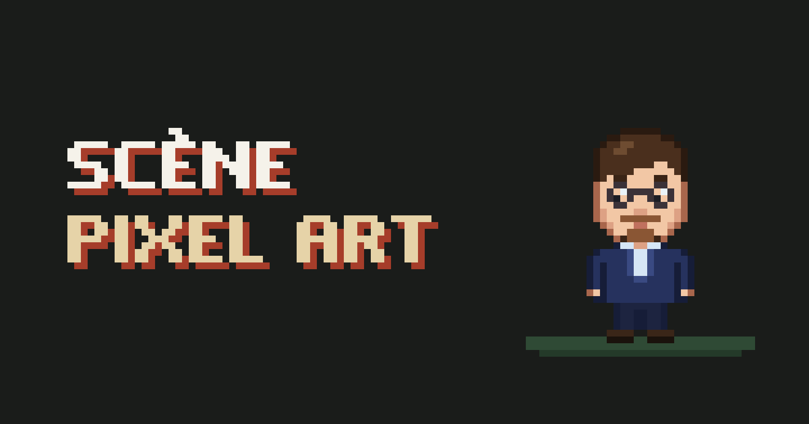
Composition 3
Le titre
Le titre en lettres pixel (même alphabet que PacQC) et l'avatar. Il ferait un bon écran d'accueil pour la page du jeu.
Recommandation : la Place dans la grille, le Titre en tête de la page du jeu. Si l'avatar doit vous ressembler davantage, une retouche sur quelques pixels suffit (coiffure, barbe, couleur des yeux) : il est décrit ligne par ligne dans le script.
Atlas
Une annonce de hors-série, en couverture et dans les travaux ; rien n'est développé.
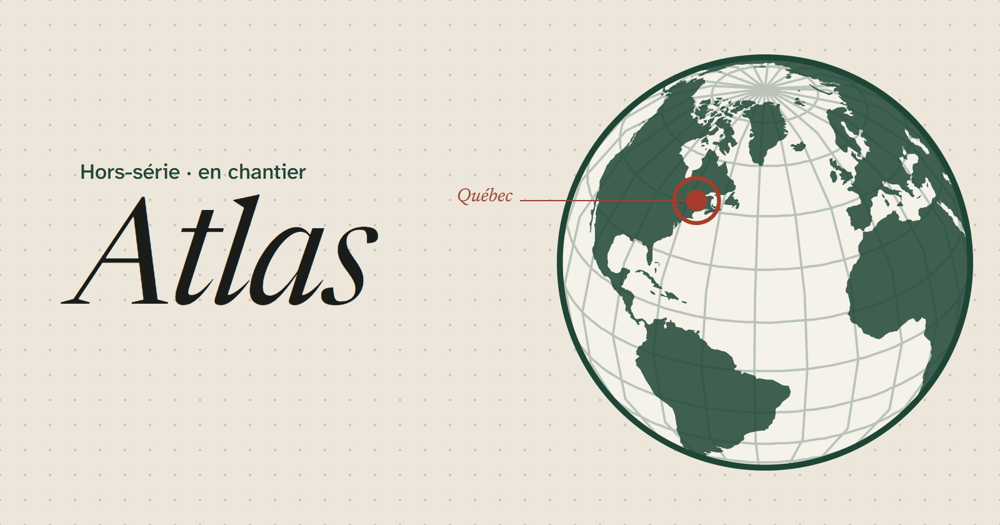
Vignette de la grille des travaux.
Ce qui change
Le globe stylisé devient une vraie carte : côtes réelles (Natural Earth au 1:110 M), projection orthographique centrée sur l'Atlantique nord, graticule de 15°.
Un seul repère, sur Québec : aucune destination n'est inventée. Les voyages viendront avec le projet.
Le titre de l'annonce mène à une fiche « Hors-série · En chantier » ; Atlas apparaît aussi en dernière ligne des travaux, « À venir ».
Le papier pointé de la vignette rappelle le carnet de voyage, sans dessin décoratif.
Le bloc d'avatar automatisé n'existait plus depuis la phase 6 ; l'annonce garde sa place.
Sur mobile : une seule ligne, la fiche signalétique reste dans le premier écran.
Le portrait
Associer le portfolio à une personne réelle, sans revenir au médaillon rond.
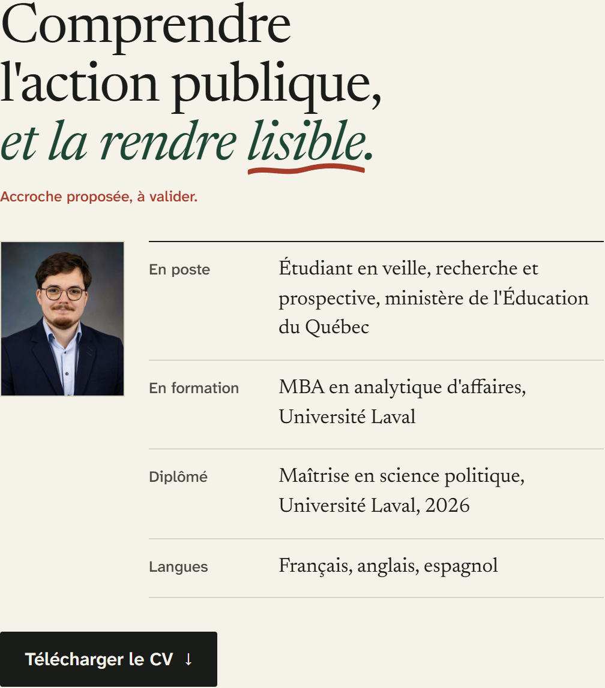
Intégration A · recommandée, intégrée à V2bis
Photo d'identité de la fiche
Un portrait rectangulaire, au format d'une photo d'identité, en tête de la fiche signalétique : la logique même d'une note de breffage sur une personne. Visible dès le premier écran, sur ordinateur comme sur mobile.
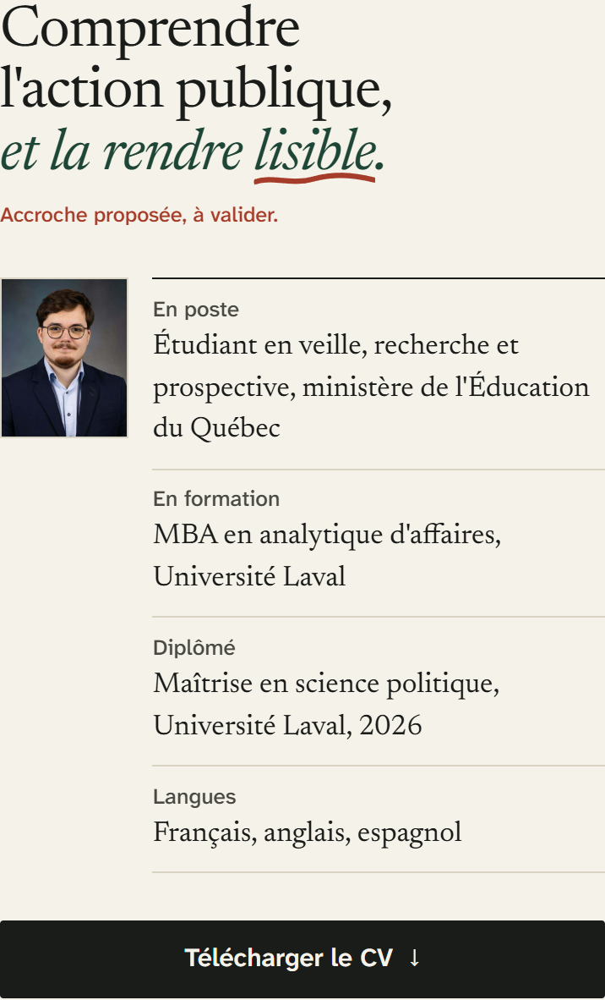
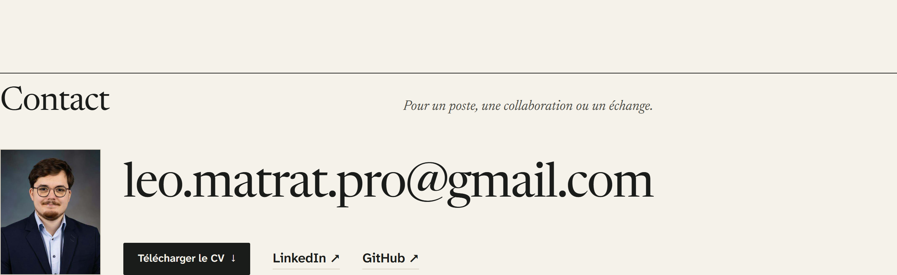
Intégration B · simulée pour la capture
Visage du contact
Le portrait accompagne l'adresse, en fin de page : on sait à qui l'on écrit. Plus discret, mais un recruteur pressé ne le voit qu'en bas de page.
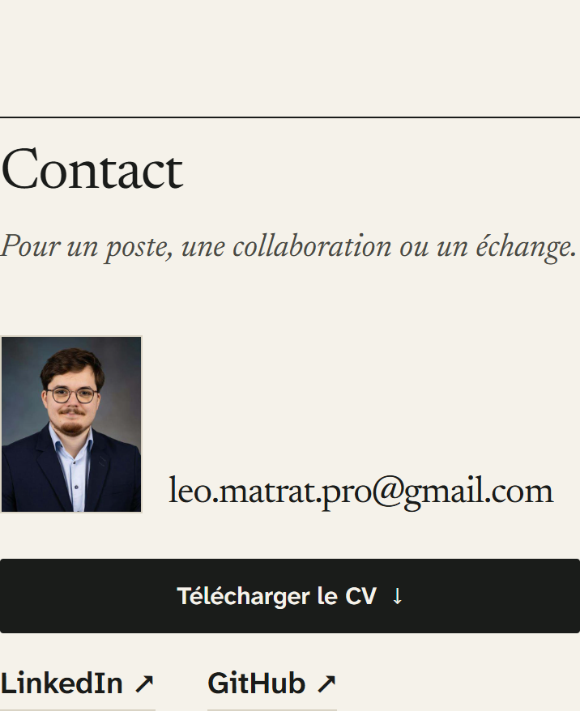
Recommandation : A. Le recadrage (medias/portrait-leo.jpg, 30 Ko) vient du portrait professionnel déjà publié sur le site actuel ; l'original n'est pas modifié. A et B peuvent coexister si vous voulez aussi un visage au contact.
À décider
Rien n'est remplacé sur le site public.
PacQC : Borne, Tuque ou Labyrinthe pour la grille ; quel logo pour la page du jeu.
Scène : la composition, et la ressemblance de l'avatar (quelque chose à corriger ?).
Atlas : le texte de l'annonce et de la fiche (rédigés d'après votre description).